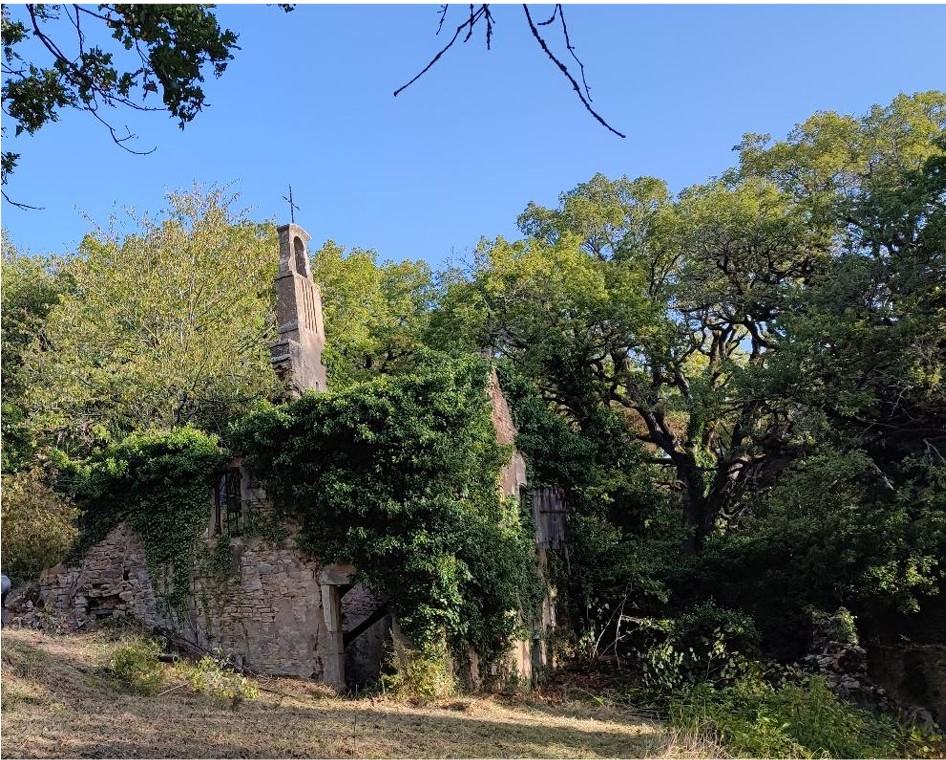

Objectifs & Démarche du Projet
Créée en 2019, l'association **Sennecey Patrimoine** s'est donné pour mission d'arracher les ruines de la Chapelle Saint-Claude à une disparition programmée. En octobre 2023, une convention cadre décisive de 15 ans a été signée avec la mairie de Sennecey-le-Grand, confiant officiellement la maîtrise d'ouvrage à l'association.
Le projet se décline autour de quatre objectifs majeurs : l'étude archéologique du site, sa mise en valeur paysagère, sa restauration physique et son animation culturelle future pour les citoyens.
Des chantiers participatifs
L'association organise des journées citoyennes avec des bénévoles locaux ainsi que des chantiers internationaux de jeunes sous l'égide de la fédération **REMPART Bourgogne-Franche-Comté**.
Un encadrement rigoureux
Tous les travaux sont placés sous la supervision scientifique de **Laure De Raeve**, architecte du patrimoine, et encadrés techniquement par les maçons professionnels de l'entreprise **Jeandin**.
Le chantier en images
Avant la restauration

La chapelle à l'état de ruine au milieu de la forêt, étouffée par la végétation.
La restauration en action
Faites défiler le diaporama pour voir l'évolution des travaux.